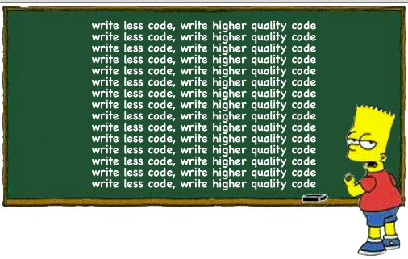
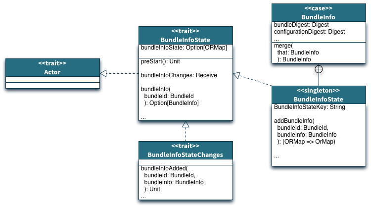

A Guided Tour of a
Distributed Application

A Reactive Application Manager that empowers
Operations to deploy and control distributed systems
My Principles

Difficulty Level
The Cast
- Scala
- Scala Pickling
- Akka (cluster, streams, http, data-replication)
- Play (Visualizer)
Challenges & Solutions
Receive a stream, find a node and stream onto it
⬇
akka-streams, FSM
Challenges & Solutions
Replicating bundles and scaling them
⬇
akka-cluster, akka-data-replication, FSM
Challenges & Solutions
Running akka-cluster based apps
⬇
Orderly startup, FSM
Challenges & Solutions
Consolidated logging
⬇
akka-streams
Challenges & Solutions
Avoid Batching
⬇
Event Driven
Challenges & Solutions
Testing
⬇
Visualizer, Docker
Challenges & Solutions
Sharing State
⬇
akka-data-replication
Solutions - Data Replication

Solutions - Data Replication
class ScaleScheduler
extends ReplicatingActor
with BundleInfoState ... {
...
override def receive: Receive =
super.receive.orElse(scheduling).orElse(...)
Learnings
- Convey state or read state when making a decision
- Test with at least 3 nodes
- Visualize your cluster